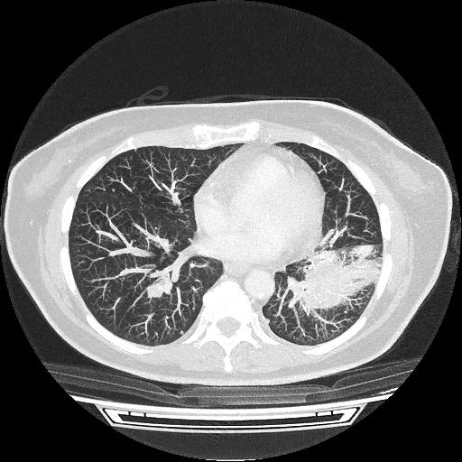

Fall 3 – Raumforderung im Thorax

Welche Untersuchungsregion ist das?
Welche Untersuchungstechnik wurde verwendet?
Welche möglichen Diagnosen fallen dir ein?
Wie grenzt man eine maligne von einer benignen Läsion ab?